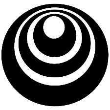

Ahmed Rafi Hasan
Ahmed Rafi Hasan (আহমদ রাফি হাসান in Bangla/বাংলা); Name of origin: Ahmed (Arabic) – Highly praised / Commendable | Rafi (Arabic) – Noble / Exalted | Hasan (Arabic) – Handsome / Virtuous
AI engineer & researcher
Striving to blend breadth and depth in AI.
I am an AI engineer and researcher specializing in Multimodal Machine Learning, Reinforcement Learning, and Computer Vision. Currently working as a Machine Learning Engineer at Pivotly, design and developing Gen AI applications, LLMs, and end-to-end ML systems with cloud deployment expertise on Microsoft Azure.
My research focus spans Scene Graph Generation, Medical Image Analysis, and Precision Agriculture applications. I hold a B.Sc. in Computer Science and Engineering from United International University with Cum Laude distinction. I published research papers in IEEE Access, Computer and Electronics in Agriculture, IEEE TENCON, and other venues. Previously served as ML Engineer at Silcon Orchard Limited and Nodes Digital Limited working on Physics Guided Neural Net, Synthetic Data Generation, Enhanced Caption Generation, AgriTech solutions and IoT-based smart agriculture systems.
I am passionate about advance research in AGI development, with particular interest in interdisciplinary applications of AI. My long-term goal is to establish a world-class research lab contributing to safe and beneficial AI systems.
Longterm Research Interest: Multimodal Machine Learning, Deep Reinforcement Learning, Embodied AI and Robotics(Multi-agent Control systems, Unmanned Aerial Vehicles), Physics Guided/Informed/Encoded Neural Network, 3D Scene Graph Generation, Multi-view synthesis and reconstruction, Medical Image processing, LLMs/VLLMs.
Currently looking for PhD opportunities. Open to talk about both academic and industrial collaborations and opportunities.
Experiences
Professional Experiences
For details visit here.
August 2025 - Present (Full-Time)
Currently working on Multi-agent Conversational Recommendation Systems (CRS), AI Search for multiple client projects. Developing AI features for Pivotly Platform and contributing to in-house projects.
Project Managers – Darren Gates, Byron Kwok, Kyle Karwatski
February 2025 - July 2025 (Full-Time)
Worked on multiple in-house AI based products. Brainstormed on in-house product development and also for the clients.
* Developed full Machine learning pipeline for the product: SOLCHAT
* Worked on Multimodal Sentiment detection project.
* Worked on VLLMs and LLMs and Explainable AI based business solution, Class Incremental Learning etc.
* Developed muliple azure based ML service for the clients.
Junior Machine Learning Engineer at Silicon Orchard Limited
March 2024 - January 2025 (Full-Time)
Supervisors - Dr. Kishor Datta Gupta , Mohd Ariful Haque, Md. Saifur Rahman
September 2023 - February 2025 (Full-Time)
Developed ML algorithms for two funded precision agriculture projects in collaboration with Bangladesh Agricultural Research Council (BARC) and Institue for Advanced Research (IAR). Led the design and implementation of machine learning models for IoT-based smart irrigation systems, focusing on the Alternate Wetting and Drying (AWD) technique for sustainable rice production. Created predictive models for real-time water level monitoring and automated decision-making, enabling efficient water distribution among farmers. Worked on feasibility studies for IoT-based precision agriculture deployment across Bangladesh, contributing to both algorithmic development and system integration. Key achievements include developing computer vision models for water level detection, implementing edge computing solutions for IoT devices, and contributing to the development of a real-time water level monitoring system.
Machine Learning Intern at Nodes Digital Limited
January 2023 - August 2023 (Part-Time)
Supervisor - Dr. Swakkhar Shatabda
June 2023 - September 2023 (Part-Time)
Conducted and taught core undergraduate courses including Digital Logic Design and Discrete Mathematics, developing curriculum materials and conducting lectures for 100+ students. Designed assignments and mid/final qustions to assess and evaluated student performance, and provided academic mentorship.
Undergraduate Teaching Assistant at Dept. of Computer Science & Engineering,United International University
March 2022 - May 2023 (Part-Time)
Selected as teaching assistant for multiple courses across three semesters:
• Artificial Intelligence Laboratory - Guided students through ML/AI implementations and practical exercises for AI algorithms
• Data Structure & Algorithm I/II Laboratory - Conducted lab sessions on algorithm design and complexity analysis.
• Data Mining - Assisted with coursework on classification, clustering, and pattern recognition techniques and slide making for the course teacher.
• Structured Programming Language Lab - Taught C programming fundamentals and debugging techniques, designed final assignments and quizzes, and provided academic mentorship.
Responsibilities included conducting lab sessions, councelling students, grading assignments, holding office hours, and mentoring 200+ students in programming and algorithmic problem-solving.
Undergraduate Research Experience
April 2022 - December 2022
Worked under the supervisions of Dr. Dewan Md. Farid and Akib Zaman
• Explored state-of-the-art scene graph generation techniques from recent research papers.
• Developed strategies for handling class imbalance in visual relationship detection datasets.
• Implemented and evaluated multiple architectures for object detection and relationship prediction and scene graph generation.
November 2021 - December 2022
Worked under the supervision of Dr. Saddam Hossain Mukta
• Implemented the theoretical hypotheses of a Dynamic Weighted Tabular Method for CNNs.
• Conducted Image processing, training, and prepared ablation studies and result tables.
Volunteer Experiences
March 2021 – May 2022
Coordinated effective communication with the departments & the DSA office, ensuring event planning and execution.Managed the club’s social media presence by creating and implementing innovative content strategies and engagement.
September 2021 – April 2022
Led counseling sessions during mid and final terms, offering academic support to students. Organized programming contests and conducted online workshops for freshers to build technical skills.
April 2019 – Dec 2019
Junior judge of Children Science Congress-2019(Science Projects) for evaluation of different types of scientific projects by young research enthusiasts. Instructor of Kudrat E Khuda Science Camp-2019. Conducted several science camps and workshops for Children Science Congress participants.
Publications
For details visit Google Scholar.Published
Accurate water level monitoring in Alternate Wetting and Drying rice cultivation using attention-based ConvNeXt architecture
Ahmed Rafi Hasan, Niloy Kumar Kundu, Saad Hasan, Mohammad Rashedul Hoque, Swakkhar Shatabda
Published in - Computers and Electronics in Agriculture (Volume 234,Pages 110216)[IF: 8.9]
A dynamic weighted tabular method for convolutional neural networks
Md Ifraham Iqbal, Md Saddam Hossain Mukta, Ahmed Rafi Hasan, Salekul Islam
Published in - IEEE Access (Volume 10,Pages 134183-134198)
A Novel Method for Imbalanced Data Classification based on Label Reassignment
Ahmed Shabab Noor, Afsana Airin, Rezab Ud Dawla, Ahmed Rafi Hasan, Muhib Al Hasan, Akib Zaman, Dewan Md Farid
Accepted in - IEEE Region 10 Conference (TENCON)(Page 1-6)
Degrees of Anger Prediction from Speech
Ahmed Rafi Hasan, Akib Zaman, Puja Ghosh, Tazkia Tasnim Bahar Audry, Fardina Bhuiyan, Arindam Kundu Amit, Md Saddam Hossain Mukta
Accepted in - 25th International Conference on Computer and Information Technology (ICCIT)(Page 318-323)
Attention-based scene graph generation: A review
Afsana Airin, Rezab Ud Dawla, Ahmed Shabab Noor, Muhib Al Hasan, Ahmed Rafi Hasan, Akib Zaman, Dewan Md Farid
Published in - 14th International Conference on Software, Knowledge, Information Management and Applications (SKIMA) (Page 210-215)
As Co-Supervisor
Predicting Crop Prices using Machine Learning Algorithms for Sustainable Agriculture
Iftekhar Mahmud, Puja Rani Das, Md Habibur Rahman, Ahmed Rafi Hasan, Kamrul Islam Shahin, Dewan Md Farid
Published in - 2024 IEEE Region 10 Symposium (TENSYMP) (Page 1-6)
Competitions
Best Performances
Participated in the medical imaging competition focused on detecting abdominal trauma from CT scans. Built a preprocessing and visualization pipeline, explored organ-level correlations, and implemented weighted log-loss based evaluation with scaling strategies to improve classification accuracy for multiple organ injuries.
Developed a deep learning pipeline for validating image captions using pre-trained vision-language models (BLIP, ViT-GPT2). Implemented caption generation from given images and benchmark images, then evaluated semantic similarity with sentence transformers to produce validation scores. Designed and submitted the solution. .
Successfully completed all 5 F1-themed AI puzzles within the 3-week timeframe from car detection and speedometer reading to team classification, smoke removal, and car orientation classification.
Applied different classical ML algorithms, time series and LSTM models to predict CO2 Emissions. .
Projects
Research Projects
AI-based loan prediction system with enhanced support through loan policy and counseling services. The journey involved meticulous model training, integration of Retrieval-Augmented Generation (RAG) and model explainibility.
A reinforcement learning project implementing Q-Learning to train a taxi agent in a 10x10 grid environment with obstacles and dynamic passenger/destination locations
Designed a system for Alzheimer’s disease detection using brain MRI, employing 3D medical image preprocessing. Trained 2D and 3D CNN models for accurate diagnosis. Applied image slicing, skull removal, Image registration and data augmentation.
Academic Projects
QucikChat
QucikChat is a dextop chatting app developed in Java. By using this application people can chat with friends in the
network area(LAN) by using intranet mailing..
UIU Club Management System
Developed a university club management system to streamline membership, event scheduling, and activity tracking,
enhancing administrative efficiency and student engagement.
Money Management App
It is a money management app where user can track his/her expenses in regular daily life. In our day-to-day life, it is
important to track our expenses and savings and thus we would easily find out what things are needed further.
Certifications
MOOCs

MCP: Build Rich-Context AI Apps
deeplearning.ai
Short Course: Completed
AI Agents in LangGraph
deeplearning.ai
Short Course: Completed
 30 Days of ML Award
30 Days of ML Award
Kaggle
Challenge: Completed